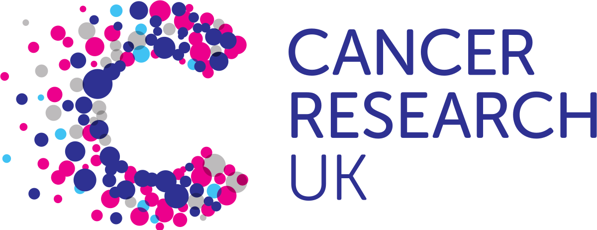

Alex Sandham Creative
About
We provide high quality photo's at low prices. From as little as £3.99 we can provide you with high quality JPEG files to download and an aditional £2.50* for your photos on a memory stick. We also do passport photos for print or online application.
We use high quality equiptment to make sure you recieve the service you deserve.
- The equiptment we use is;
- Camera: Canon 550D
- Lenses: Canon 18-55mm f3.5-5.6 / Sigma 70-300mm f4-5.6
- Tripod: Neewer Carbon Fibre 65 inch
- Flash: Canon Speedlite
At ASC we believe that charity is an important part of company reputation. Therefore at the end of each month 10% of our earnings will be given to charity. These charities will be chosen internally at random and evidence of these donations can be found here
- Charities We Support:
- Cancer Research UK
- RSPCA
- Acorns Childrens Hospice
- And many more....
